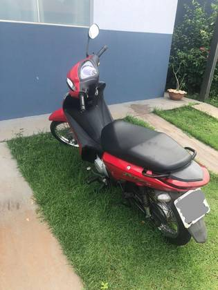
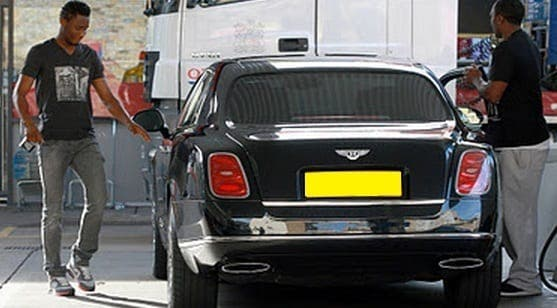
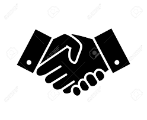

VOUS VOULEZ SAVOIR COMMENT J'AI ACHETTE MA PREMIERE VOITURE AVEC 1XBET SANS MISER NI DEPENSER 1frs?
Qui suis-je ?
je m'appel ahmid jordan ,je suis camerounais et plus precisement du littoral.
j'ai 33 ans et j'ai commencer a m'interresser a 1xbet quand j'avais 26 ans.
1xbet est une societe de paris sportif tres exeptionnelle par rapport aux autres site de paris en ligne.
durant mes debuts avec 1xbet, je n'ai pas chercher á gagner de l'argent rapidement mais plutot á comprendre son principe de fonctionnement
Et maintenant j'exploite ce que j'ai trouver pour vivre ma petite vie de réve et je suis libre financierement.
Alors que ce que j'ai trouver ?
AVEC 1xbet il y a plusieurs moyens de gagner de l'argent sans avoir á miser sur quoi que ce soit .
Moi precisement j'emploi juste deux metodes et ces deux metodes sont efficaces et assez rentables pour moi.
Il s'agit de :
AFFILIATION 1XBET
Quand moi j'ai debuté avec 1xbet je ne savais vraiment rien dans le monde du sport et plus particulierement dans le domaine de paris . De ce fait je perdais enormements.
C'est apres quelques mois de recherches que je suis tombé sur l'affiliation 1xbet.
Je me suis lancer sur l'affiliation et j'ai oublié le paris parceque ca ne me portait pas chance du tout.
Au debut j'ai partagé mon lien de parrainage avec mes amis , mes freres , et quelques connaissances sur facebook.
Á moins d' un mois j'avais deja 28 affiliés et je gagnais déja en moyenne 18 000 frs chaque semaine.
J'ai voulu aller plus loin. pour ce fait :
- Je me suis initié dans le paris sportif(mais pas pour parier)
- J'ai crée un groupe whatsapp et facebook pour partager des coupons gratuitemet
- ET pour ameliorer ma visibilite, j'ai crée plusieurs comptes sur des reseaux sociaux comme twitter , instagram...
BOOOM... et voilá en quelques mois je me retrouve avec prs de 167 affilies
Mes revenus remontent á plus de 200 000frs par mois et c'est en fevrier 2018 que j'ai achete ma premiere moto.

Comme vous savez que la vie est le monde des besoins il me fallait déja une voiture
Mais mes revenus etait insufisants et il me fallait trouver un autre moyen pour pouvoir l'augmenter et pour acheter la voiture de mes reves.
C'est dans ce besoin que je me lance dans une nouvelle methode : c'est le partenariat 1xbet.
PARTENARIAT 1XBET
Le partenariat est loin d'etre facile mais tres rentable. avec le partenariat vous gagner 25% des pertes de vos affilies.
Je ne sais pas si vous le savez mais c'est une methode qui fait appel á l'utilisation des codes promos.
Au debut j'avais du mal á retirer mes gains parceque je devais toujours attendre que c atteint 30$.
C'est apres 3 mois que j'ai retiré mon premier gain avec le partenariat qui se levais a 66$ (environ 40 000frs).
Mais ces revenus etaient peu, il fallait aller plus loin. c'est á ce moment que j'ai commencé á publier mes codes promos dans mes réseaux sociaux et des dizaines de forum.
apres 1 ans de travail 7jours/7 avec le partenariat 1xbet je me retrouve avec plus de 230 affiliés et le salaire remonte á plus de 50 000frs par semaine.
C'est donc en 2020 que j'achete ma voiture

NOTE:
Lancer vous avec ces astuces vous allez gagner beaucoup d'argent en moin de quelques temps:

AFFFILIATION

PARTENARIAT